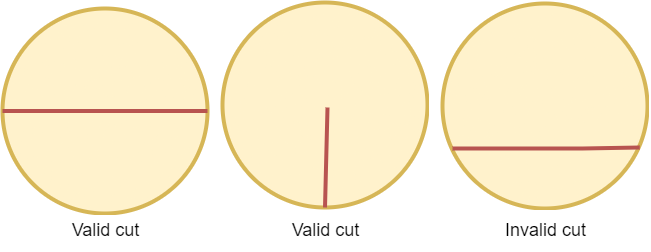
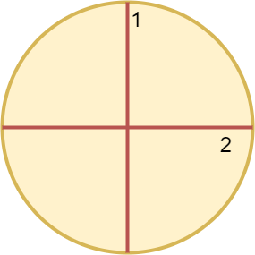
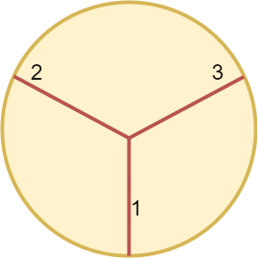

| Category | Difficulty | Likes | Dislikes |
|---|---|---|---|
| Algorithms | Easy | 314 | 63 |
google | amazon | tcs
A valid cut in a circle can be:
Some valid and invalid cuts are shown in the figures below.

Given the integer n, return the minimum number of cuts needed to divide a circle into n equal slices.
Example 1:

Input: n = 4
Output: 2
Explanation:
The above figure shows how cutting the circle twice through the middle divides it into 4 equal slices.Example 2:

Input: n = 3
Output: 3
Explanation:
At least 3 cuts are needed to divide the circle into 3 equal slices.
It can be shown that less than 3 cuts cannot result in 3 slices of equal size and shape.
Also note that the first cut will not divide the circle into distinct parts.
Constraints:
1 <= n <= 100